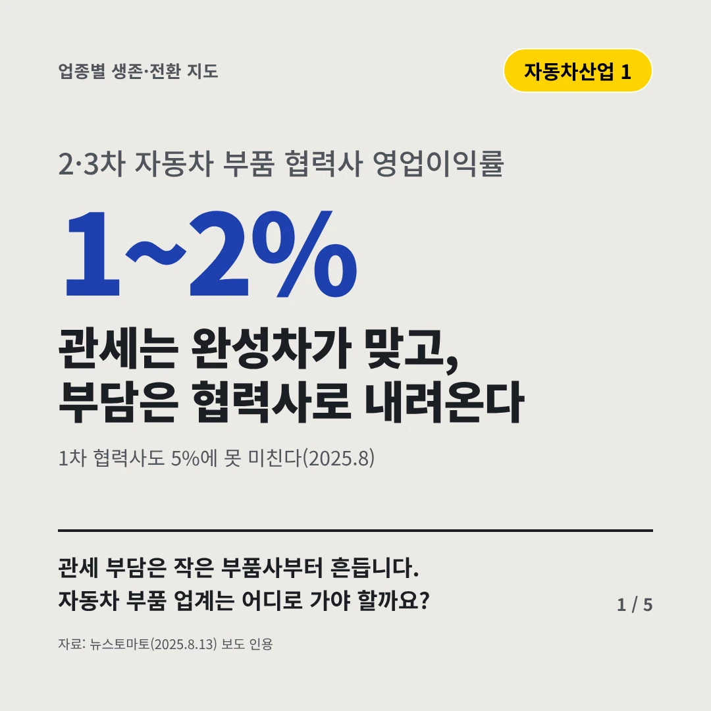
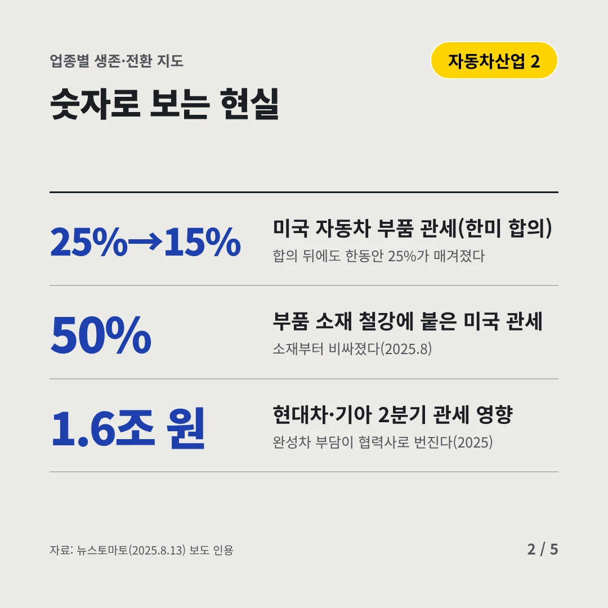
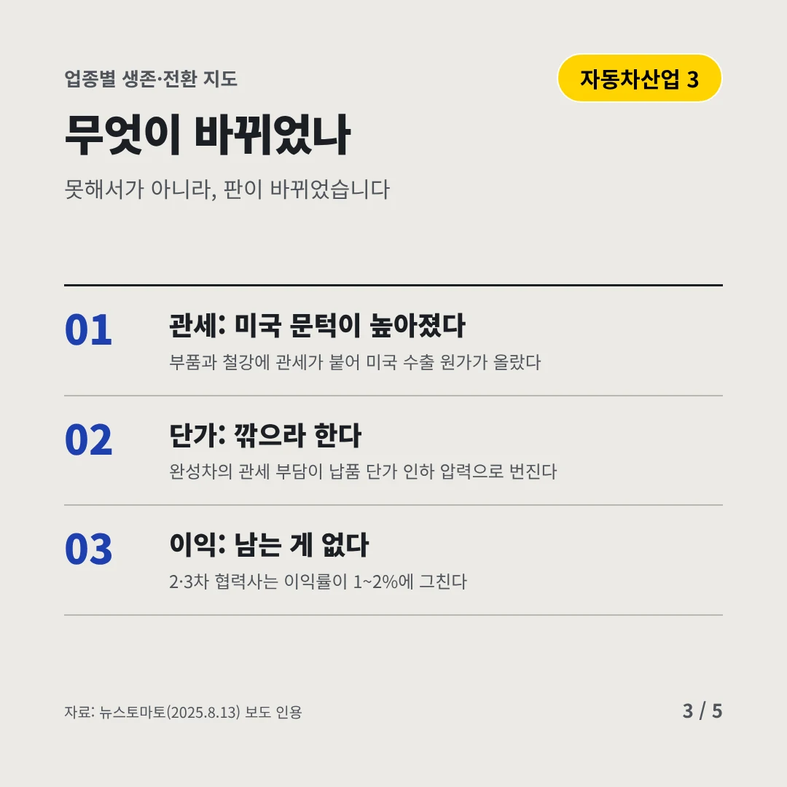
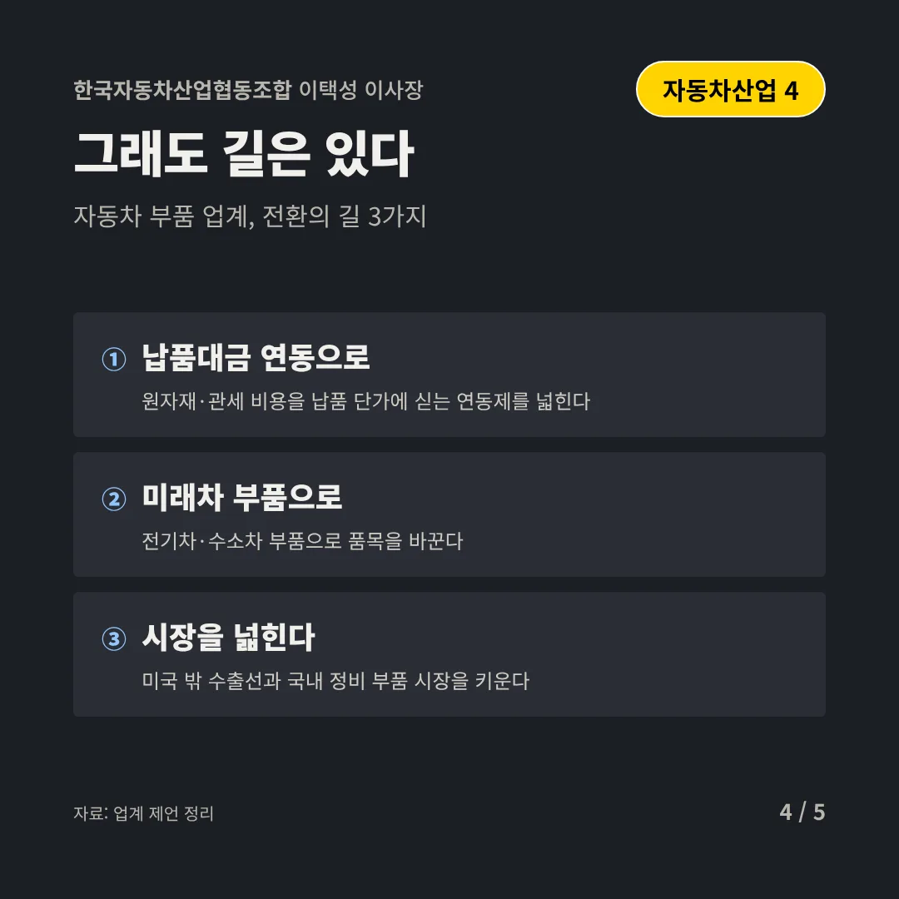
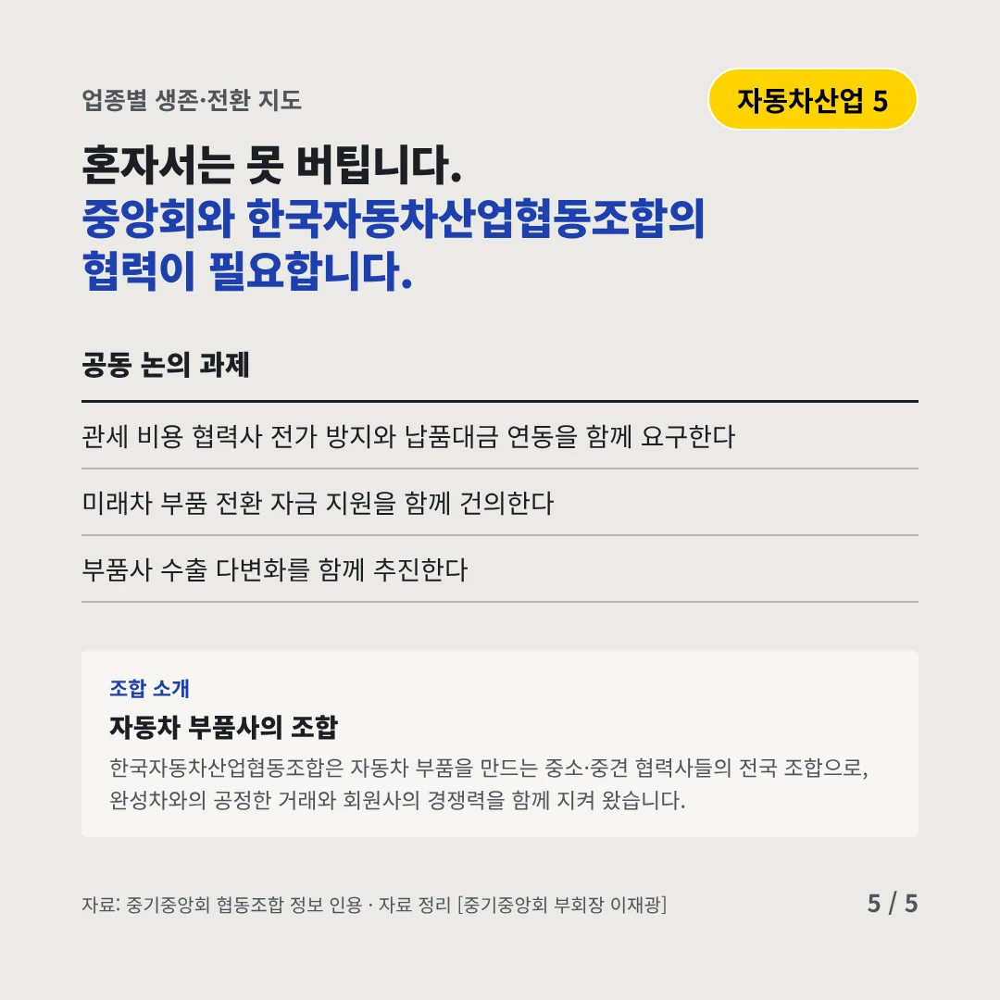
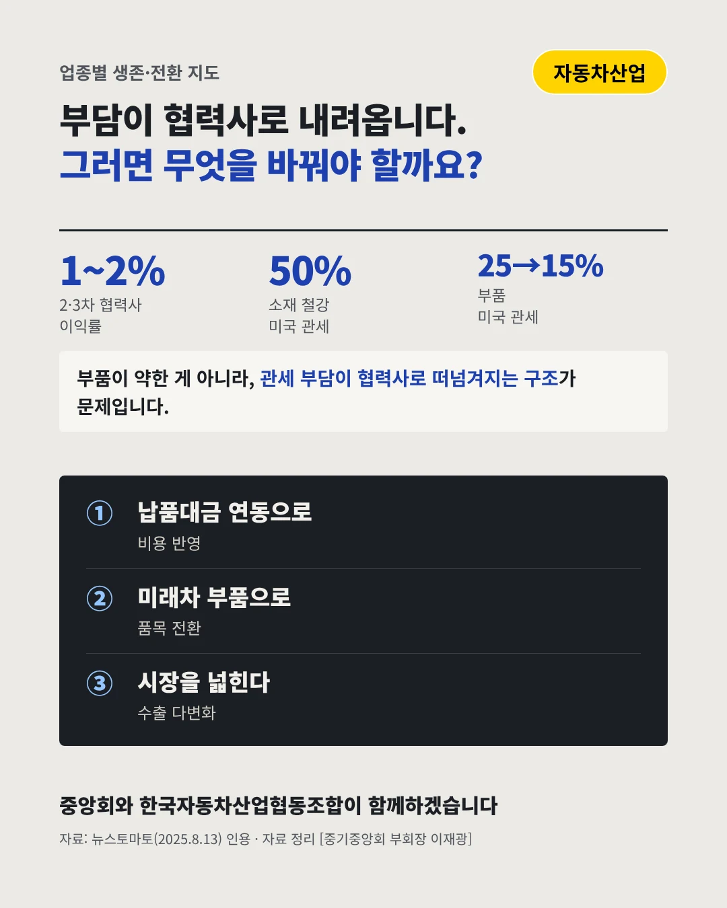

한국자동차산업협동조합
관세는 완성차가 맞고, 부담은 협력사로 내려온다
1~2% 2·3차 자동차 부품 협력사 영업이익률






관세 부담은 작은 부품사부터 흔듭니다. 자동차 부품 업계는 어디로 가야 할까요?
숫자로 보는 현실
- 25%→15%미국 자동차 부품 관세(한미 합의)합의 뒤에도 한동안 25%가 매겨졌다
- 50%부품 소재 철강에 붙은 미국 관세소재부터 비싸졌다(2025.8)
- 1.6조 원현대차·기아 2분기 관세 영향완성차 부담이 협력사로 번진다(2025)
무엇이 바뀌었나
- 관세: 미국 문턱이 높아졌다부품과 철강에 관세가 붙어 미국 수출 원가가 올랐다
- 단가: 깎으라 한다완성차의 관세 부담이 납품 단가 인하 압력으로 번진다
- 이익: 남는 게 없다2·3차 협력사는 이익률이 1~2%에 그친다
그래도 길은 있다
- 납품대금 연동으로원자재·관세 비용을 납품 단가에 싣는 연동제를 넓힌다
- 미래차 부품으로전기차·수소차 부품으로 품목을 바꾼다
- 시장을 넓힌다미국 밖 수출선과 국내 정비 부품 시장을 키운다
한 장 요약

조합 소개
한국자동차산업협동조합은 자동차 부품을 만드는 중소·중견 협력사들의 전국 조합으로, 완성차와의 공정한 거래와 회원사의 경쟁력을 함께 지켜 왔습니다.
자료: 뉴스토마토(2025.8.13)